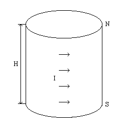
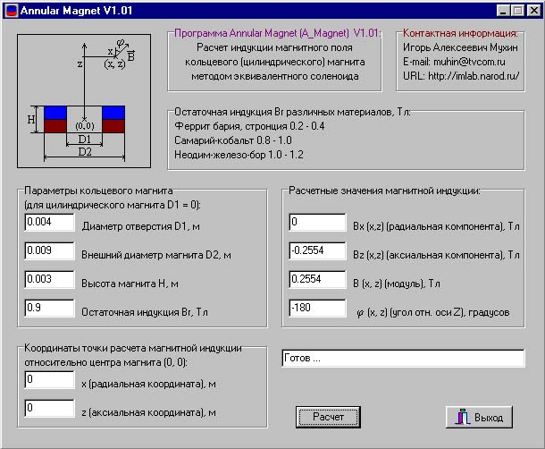

A_Magnet:
Программа-калькулятор индукции магнитного поля
кольцевого (цилиндрического) магнита методом эквивалентного соленоида
Теория

Рис. 1. Представление цилиндрического постоянного магнита эквивалентным соленоидом.
Постоянный магнит с аксиальным направлением намагниченности, в частности, цилиндрический, можно рассматривать как однослойный соленоид с бесконечно тонкой обмоткой, геометрически соответствующей боковой поверхности магнита, по которой течет намагничивающий ток I (см. рис. 1). Условием эквивалентности магнита и соленоида является равенство их магнитных моментов. Магнитный момент магнита (P) может быть найден по формуле:
P = M V = M S H, где M – намагниченность магнита, V – его объем, S – площадь сечения, H – высота.
Магнитный момент эквивалентного соленоида:
P = j H S, где j = I/H – линейная плотность намагничивающего тока.
Тогда:
j = M
Для материалов с прямоугольной петлей гистерезиса (феррит бария, феррит стронция, неодим-железо-бор, самарий-кобальт и т. п.):
M ~ Br/m0, где Br – остаточная индукция, m0 = 4p ∙ 10-7 Гн/м – магнитная постоянная. Таким образом, линейную плотность намагничивающего тока можно выразить приближенной формулой:
j = Br/m0
Кольцевой постоянный магнит с аксиальным направлением намагниченности может быть представлен как два однослойных цилиндрических соленоида с бесконечно тонкими обмотками, вложенные друг в друга. Соленоид диаметром D2 и высотой H соответствует внешней боковой поверхности магнита, а соленоид диаметром D1 и высотой H – внутренней поверхности отверстия. Намагничивающие токи в соленоидах равны по величине и противоположны по направлению.
Рассчитать величину и направление вектора магнитной индукции B в произвольной точке магнитного поля, создаваемого в вакууме (или воздухе) однослойным соленоидом с известной линейной плотностью тока, можно с помощью закона Био-Савара-Лапласа [2].
Программа Annular Magnet (A_Magnet)

Рис. 2. Внешний вид окна программы A_Magnet (версия 1.01).
Входные данные:
D1 - диаметр отверстия магнита, м
D2 - внешний диаметр магнита, м
H - высота магнита, м
Br - остаточная индукция материала магнита, Тл
x - радиус точки (относительно точки (0, 0) - центра магнита), в которой
требуется рассчитать составляющие магнитной индукции, м
z - высота точки (относительно точки (0, 0) - центра магнита), в которой
требуется рассчитать составляющие магнитной индукции, м
Выходные данные:
Bx (x, z) - радиальная составляющая магнитной индукции в точке с
координатами (x, z) (относительно точки (0, 0) - центра магнита), Тл
Bz (x, z) - аксиальная составляющая магнитной индукции в точке с координатами
(x, z) (относительно точки (0, 0) - центра магнита), Тл
B - модуль магнитной индукции в точке с координатами (x, z) (относительно точки
(0, 0) - центра магнита), Тл
f - угол между
вектором магнитной индукции в точке с координатами (x, z) и осью Z, градусов
Программа A_Magnet позволяет рассчитывать по заданным геометрическим размерам (D1, D2, H) магнита и остаточной индукции (Br) материала, из которого сделан магнит, величину магнитной индукции (B, Bx, Bz) в заданной точке пространства (x, z). Расчеты производятся в системе СИ. Результаты выводятся на экран монитора.
Используя принцип суперпозиции [2], можно рассчитывать магнитные поля систем кольцевых (цилиндрических) постоянных магнитов.
Демонстрационная версия программы A_Magnet:
Версия 1.01: A_Magnet101d.rar (~88 Кбайт)
Демонстрационная версия программы позволяет рассчитывать индукцию магнитного поля на оси магнита (x = 0). Точность расчетов несколько ниже, чем в основной версии. Программа может работать с операционными системами (ОС) Windows 3.1, Windows 95, 98, XP и Vista (с другими ОС семейства Windows не проверялась).
Файл A_Magnet101d.rar необходимо распаковать в заранее созданную папку. Упаковка производилась с помощью WinRar 2.80. Результат распаковки: A_Magnet101d.exe - исполняемый файл программы. После запуска программы можно вводить входные данные и производить расчет нажатием соответствующей кнопки. Входные данные (D1 - диаметр отверстия, D2 - внешний диаметр магнита, H - высота магнита, x - радиальная координата (x = 0), z - аксиальная координата) необходимо вводить в метрах (учитывайте установленный в ОС формат разделителя для десятичной дроби - точка или запятая, например, 0.005 или 0,005; необходимо использовать тот разделитель, который установлен в ОС, в противном случае появится сообщение об ошибке). Остаточная индукция Br вводится в теслах. Проверить правильность расчетов можно по рис. 2.
Скопированные файлы могут быть проверены на отсутствие вирусного кода в режиме on-line [5].
По вопросу получения полной версии программы обращайтесь к автору (см. раздел Контактная информация).
Экспериментальная проверка программы
В качестве одного из примеров экспериментальной проверки программы A_Magnet на рис. 3 приведены результаты расчета и измерения [6] аксиальной составляющей магнитной индукции по оси постоянного цилиндрического магнита. Размеры магнита: диаметр 14.5 мм (D2 = 0.0145 м), высота 20 мм (H = 0.02 м). Состав: неодим-железо-бор, остаточная индукция ~1.1 Тл (Br = 1.1 Тл).
Рис. 2. Зависимость аксиальной составляющей магнитной индукции от аксиальной координаты: светлые кружки - расчетные значения, темные кружки - измеренные значения.
Некоторое расхождение измеренных и расчетных значений объясняется неоднородностью плотности постоянного магнита, возникающей вследствие особенностей технологии изготовления.
Ссылки:
26.10.2005
02.11.2005
20.02.2006
17.02.2008
Альтернативные источники
энергии
Компьютеры и
Интернет
Магнитные поля
Механотронные системы
Перспективные
разработки
Электроника и
технология